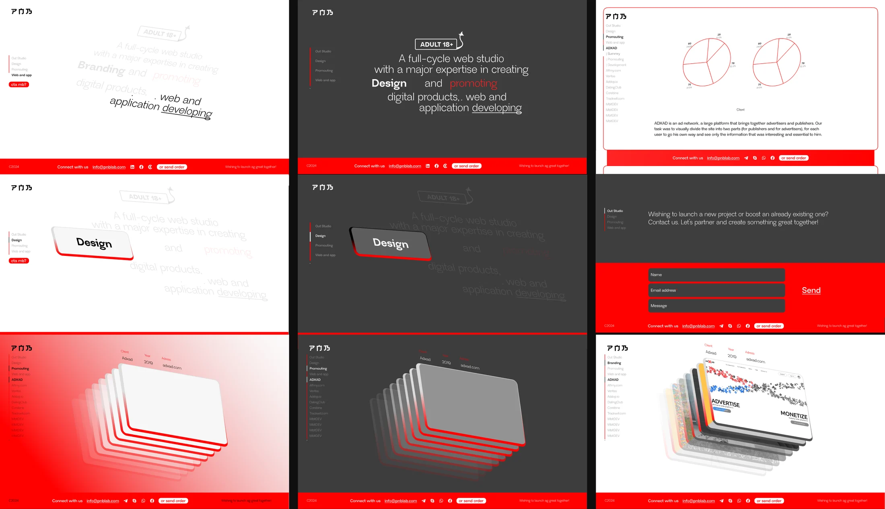
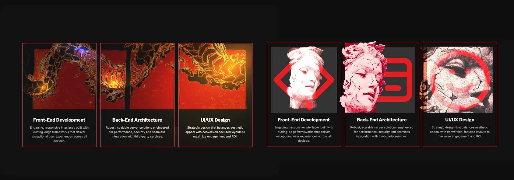
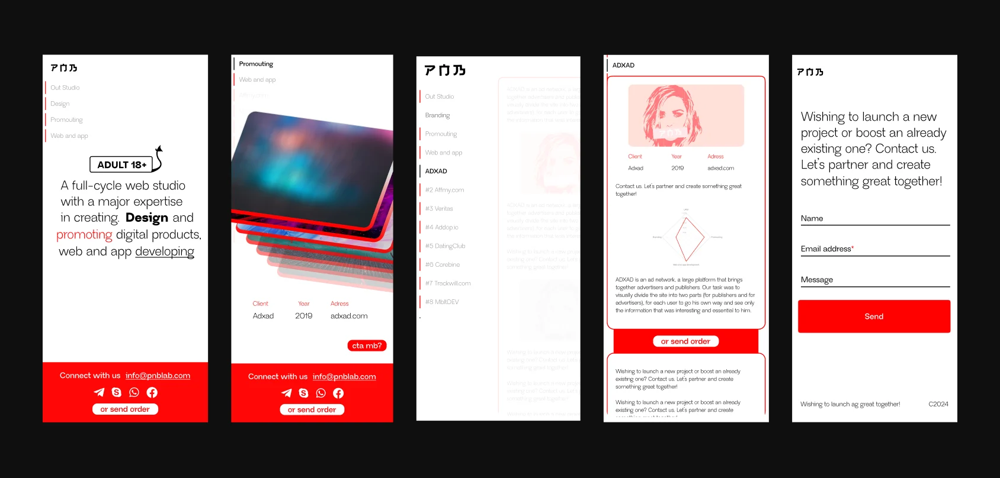

Построил сайт агентства вокруг кейсов и двух сценариев чтения
Спроектировал сайт агентства как портфолио и рабочий фильтр: клиент ищет релевантный кейс, кандидат понимает визуальную культуру и формат работы.

Задача, решение и итог
- 01Задача
Сайт агентства должен показывать способ работы, а не ограничиваться перечнем услуг.
- 02Решение
Поставил кейсы в центр и разделил чтение для клиента и кандидата.
- 03Функциональный итог
Один сайт работает как портфолио, презентация подхода и точка следующего действия.
С чем пришла команда
Клиент приходит на сайт с конкретной задачей и хочет быстро увидеть релевантную работу. Кандидату важны визуальная культура, характер команды и способ принятия решений.
Нужно было собрать обе задачи в одном интерфейсе и не превратить сайт в каталог услуг.
- Показать работу через кейсы.
- Поддержать два сценария чтения.
- Сделать следующий шаг видимым на протяжении страницы.
Сделал кейс основной единицей сайта
Архитектура начинается с задачи и доказательства. Типографика работает громко при первом взгляде и спокойнее в длинном чтении.
Каждый смысловой блок ведёт к следующему кейсу, контакту или уточнению задачи. Motion поддерживает ритм, но не заменяет содержание.
С какими намерениями могли бы приходить на сайт
Синтетическая модель- Найти релевантный кейс46
- Оценить подход24
- Познакомиться с командой18
- Перейти к контакту12

Перенёс характер системы на мобильный сценарий
На мобильном экране крупная типографика, изображения и действия перестраиваются в последовательное чтение.
Плотность снижается, но логика сохраняется: задача, визуальное доказательство, пояснение и следующий шаг.

Что получилось
Сайт показывает агентство через работу, а не декларации. Клиент может найти близкий кейс, кандидат увидеть визуальный стандарт и способ подачи.
Структура поддерживает новые кейсы без смены основной логики и визуального языка.